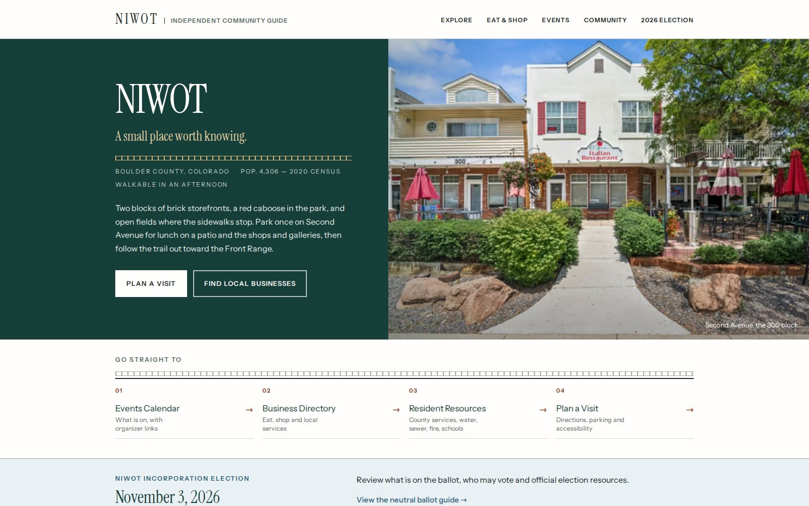
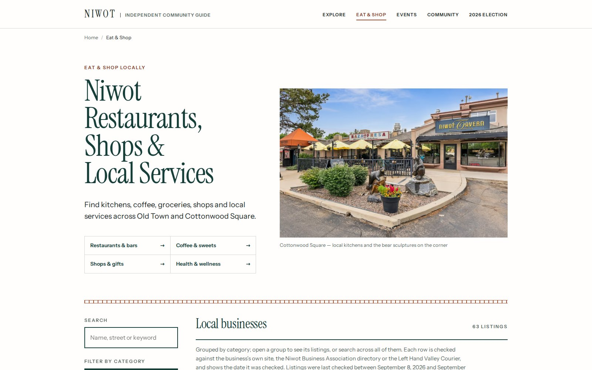
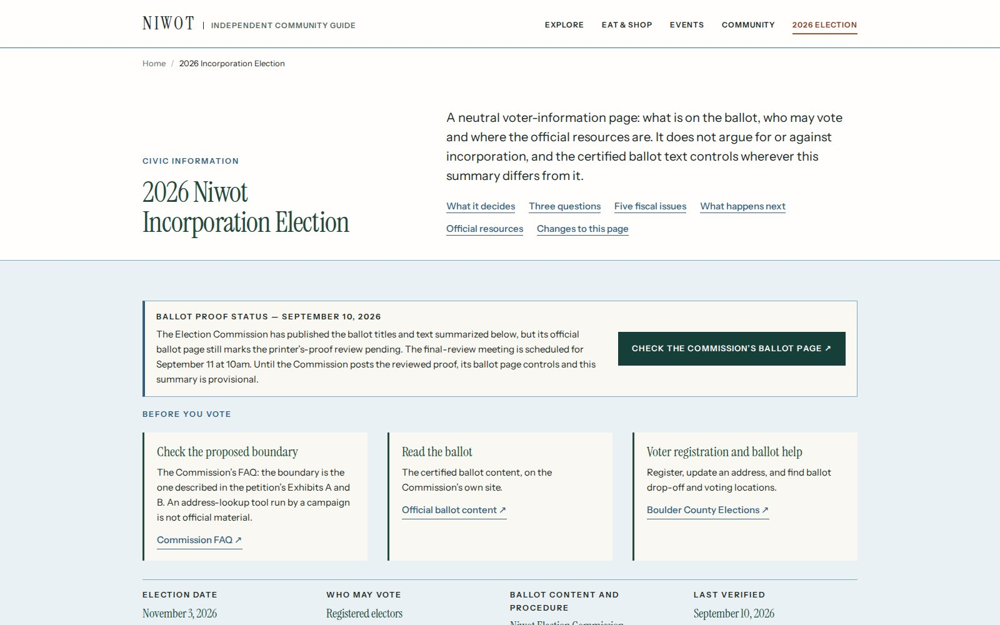
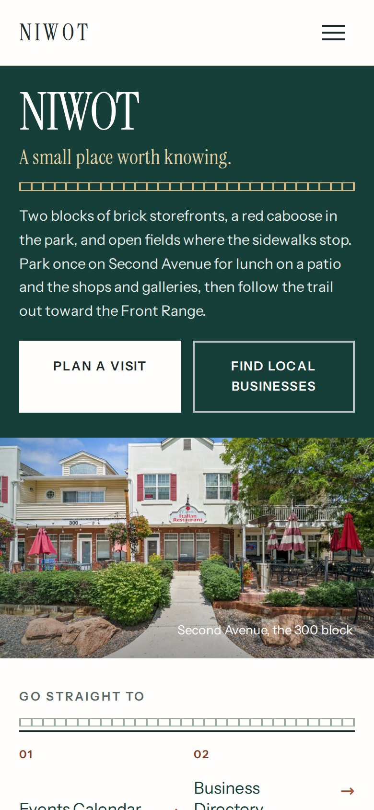

TownofNiwot.com
An independent community guide for a place with no town hall, built to be trusted during a live incorporation election.
In short
- The problem. Niwot has no town hall and was heading into a vote on becoming a town, so a site called TownofNiwot.com could be mistaken for the official word.
- What I built. A nine-page guide where every listing and event cites its source and date, with neutral election information and a build that refuses stale records.
- What it means for you. A site earns trust by showing where its facts come from, and automated checks catch mistakes before a customer does.
- Owner
- Lerner Works. I publish and edit the guide myself. It is not a government body, the Election Commission, or a campaign.
- Sector
- Community and civic information, Niwot, Colorado
- Scope
- Strategy, content model, design, build, editorial rules, accessibility and performance verification, three pre-launch audit passes
- Year
- 2026
- Status
- Launch-readiness pass completed September 10, 2026. townofniwot.com now redirects to insideniwot.com, where the guide continues as part of Inside the Towns.

At a glance
- in the directory, each with a source and the date it was last checked
- 63 businesses
- Lighthouse accessibility, best practices and SEO on every audited page
- 100 / 100 / 100
- homepage image weight at desktop width; 0.13 MB on a phone
- 3.9 MB → 0.43 MB
- that fail the build on a stale, unsourced or duplicate record
- 78 tests
Where this went. This guide is the origin of a network. Its content model, sourcing rules and editorial standard now run twenty-four Colorado town guides, and townofniwot.com redirects to Inside Niwot — every old section URL to its new page, everything else to the home page. The case study below describes the site as it was built and launched; Inside the Towns describes what it became.
The situation
Niwot is an unincorporated community of about 4,300 people between Boulder and Longmont. It has two blocks of brick storefronts, a red caboose in the park, a business association, an arts association and a historical society, but no town hall and no official website. A resident who wants to know who fixes the road or handles a building permit has to know the answer is "the county"; a visitor deciding whether to make the drive finds a scatter of listings and an out-of-date calendar.
Then, in November 2026, Niwot votes on whether to become a town. That changed the job. A site called TownofNiwot.com, carrying voter information, would be read by some people as the official word. It could not be allowed to become that by accident.
The problem in one sentence: two audiences needed a single reliable place to look, and the site had to earn trust it could not borrow from anyone.
Constraints
Never be mistaken for an official source. A disclaimer, fixed in wording, on every page: not a municipal website, not the Election Commission, not the county, not a campaign. No seals, no civic-looking crests, no "town of" phrasing in the interface beyond the domain itself.
Nothing published without a source and a date. Every business listing, every event, every line of the history timeline and every election summary had to cite the page it came from and say when it was read. Where a fact could not be confirmed, the page had to say so rather than guess. That rule is the reason the site publishes no phone numbers at all: they change faster than anything else on a listing, so every row links to the business's own page instead.
Neutral on the election. The ballot questions are summarized in plain language with the qualifications the official text carries, next to the Commission's own labels and a link to the official wording. Nothing on the site argues for or against incorporation.
Eight licensed photographs, and no stock. The whole visual identity had to come from those eight pictures and the materials of the actual place: brick, the caboose, cottonwoods, fields, the Front Range.
What I built
Nine pages serving two audiences. Explore, Eat & Shop, Events, Community and the 2026 Election in the main navigation; Our Story, Plan a Visit and Privacy reachable from the footer and the homepage. A tenth, unindexed page holds the submission form. The homepage is six sections and under 620 words: the wordmark, four quick links, a compact election notice, the next three events, four photo cards, and a split section that points residents one way and visitors the other instead of previewing every interior page.

A directory the build refuses to publish incorrectly. Each of the 63 published businesses is a record with a name, category, source URL, verification date and status. Validation runs on every build and stops it on a missing source, an unknown category, a duplicate, an insecure link, or an active record older than 180 days. Closed and unverified businesses stay in the file as the record of what was checked and never render. The rendered category counts are asserted by tests against the records they came from.
A calendar with no scraper. An event is confirmed only when its organizer has published the date, and the record cites that page. Seasons that recur but aren't dated yet appear under "expected" and never in the upcoming list or the structured data.

An election page held to a stricter standard than the rest. Three voting tasks first: the boundary, the ballot, and how to register. Then a status strip, a plain-language explanation of what incorporation decides, and each ballot question and fiscal issue with its official number, the revenue estimate the ballot states, and the qualifications the official text carries, such as the food exemption on the sales tax. A dated "changes to this page" list sits underneath. The page has its own verification date, separate from the rest of the site.

Images from eight originals. Each photograph is emitted as AVIF, WebP and JPEG at five widths with its dimensions written in, and nothing is ever upscaled. The homepage went from 3.9 MB of images to 0.43 MB at desktop width and 0.13 MB on a phone. The originals stay published only because social previews want a stable JPEG.
How it's built
One piece of logic renders the month view and the "coming up" strips twice: at build time, so crawlers and readers without JavaScript get complete markup, and in the browser, so the list is right on the visitor's clock. Build machine, visitor and Niwot are in three different time zones; the code keeps dates as strings for exactly that reason.
Forms that work with JavaScript off. The submission form posts natively to a single serverless endpoint and gets a plain redirect back; a script upgrades that to an in-place response when it can. The endpoint checks method, content type and origin, caps body size, drops honeypot submissions silently, rate-limits bursts, and validates everything. The newsletter form was deliberately withheld from launch, because the audit could not prove delivery. It returns after one real signup, one correction and one unsubscribe have been seen to work.
A verification suite that fails on the things reviewers find. Alongside 78 data and build tests, a browser runner loads every page at widths from 320 to 1,440 pixels and fails on any console or content-security-policy error, any horizontal overflow, any image without alt text, any text under 12 pixels, any focus ring under 3:1 contrast against its ground, any accessibility violation reported by axe at WCAG 2.2 AA, and any rounded corner, because the design system says there are none. It also checks the calendar's month view follows three presses of Next, that the mobile menu label resets on Escape, and that the navigation shows in full with scripting disabled.
Decisions and tradeoffs
Two visual languages, then one. A mid-project refresh had layered a product-interface vocabulary over the original editorial identity: a translucent blurred masthead with a shadow, cards and buttons that lifted under the cursor, photographs that zoomed, seven background tints in one scroll, tracked capitals on every link and caption. Read fresh after a day away, it looked "off" without an obvious reason. The fix was subtraction: no shadows anywhere, nothing moves under the cursor but color, four grounds with one reserved for civic content, one type scale, uppercase reserved for section labels, three photograph frames by job. The rules were written into the README so the next edit has something to drift against.
Consolidation over redesign. The third audit put the site at about seven out of ten launch-ready and said the problem was not the number of pages but how much of them was shown at once. So the navigation went from seven items to five, the homepage from nine regions to six, its height from 6,898 to 5,497 pixels, and the directory's search box from 906 pixels down the page to 501. Nothing was removed that a reader might need; it was folded, linked or moved.
A public corrections log. Every change to a published fact is dated and listed, site-wide on Our Story and per page where it applies. It costs a little polish and buys the thing the site exists for.
An editor address that stays blank until it's real. The site can publish a responsible editor's name and a monitored address, but both stay blank until I have a monitored address in place. Publishing an address nobody reads would be worse than none, and the pages say the form is the route until then.
A static generator, not a content system. Everything editable lives in plain data files with the schema documented at the top of each. That is enough for me as the one editor now, and the files are shaped so a content system can be pointed at them later without touching the templates.
What was not asserted. Restroom locations, accessible parking, sidewalk conditions and a schematic map were all left out or marked unconfirmed, because none could be checked on the ground during the build. The page says so instead.
Result
The figures below are from the project's own test and verification runs recorded at the launch-readiness pass on September 10, 2026, in a build sandbox. Performance scores are the sandbox's ceiling and were to be confirmed on the production host.
- Lighthouse, six pages
- Accessibility, best practices, SEO: 100 each
- Lighthouse performance
- 88–91 in the sandbox
- axe, WCAG 2.2 AA
- 0 violations, 10 pages × 2 widths
- Focus rings checked
- 337, all at 3:1 or better
- Horizontal overflow
- None at 26 widths, 320–2,560 px
- Homepage weight
- 3.9 MB → 0.43 MB of images
- Homepage length
- 6,898 → 5,497 px
- Navigation
- 7 items → 5
- Tests
- 78 pass on every build
Three pre-launch audit passes, two of them by outside reviewers reading the live site, are recorded in the repository with what each found, what changed, what was deliberately not changed, and what still needed a person. That last list is the honest part: proving form delivery into a real inbox, re-checking the ballot summary after the Commission's proof review, and confirming a handful of external links that refused an automated visitor.
Where it stands
The launch-readiness pass is complete, and the site went live at townofniwot.com. It is no longer served there: the domain now answers every URL with a permanent redirect into insideniwot.com, section by section, so nothing that was ever linked is lost. The redirects are the whole of what that domain does now, and they were checked again on September 29, 2026.
The guide itself did not stop; it moved onto a shared chassis and gained six sibling towns. The directory and the calendar are still maintained by hand from organizers' and businesses' own pages, and the build still refuses any record that goes stale — those rules traveled with it. The gates that were mine rather than the build's traveled too: proving form delivery into a monitored inbox, and reviewing the ballot summary once the Election Commission posts its proof.
Read Inside the Towns for what one town's guide turned into.
What this means for your project
A guide for a town with no town hall is an unusual brief. What it proves is ordinary: a site earns trust by showing its sources, and a build can be made to refuse mistakes before a visitor ever sees them.
- Every claim dated and sourced. On a business site that means real service names, real prices and photographs of real jobs, not stock imagery and "quality you can trust".
- Checks that run on every change. Broken links, missing alt text, text too small on a phone: caught by a script before launch rather than by a customer afterwards.
- Images that weigh what they need to. The homepage went from 3.9 MB to 0.43 MB of pictures with no visible change, which is the difference between a site that loads on a job site and one that doesn't.